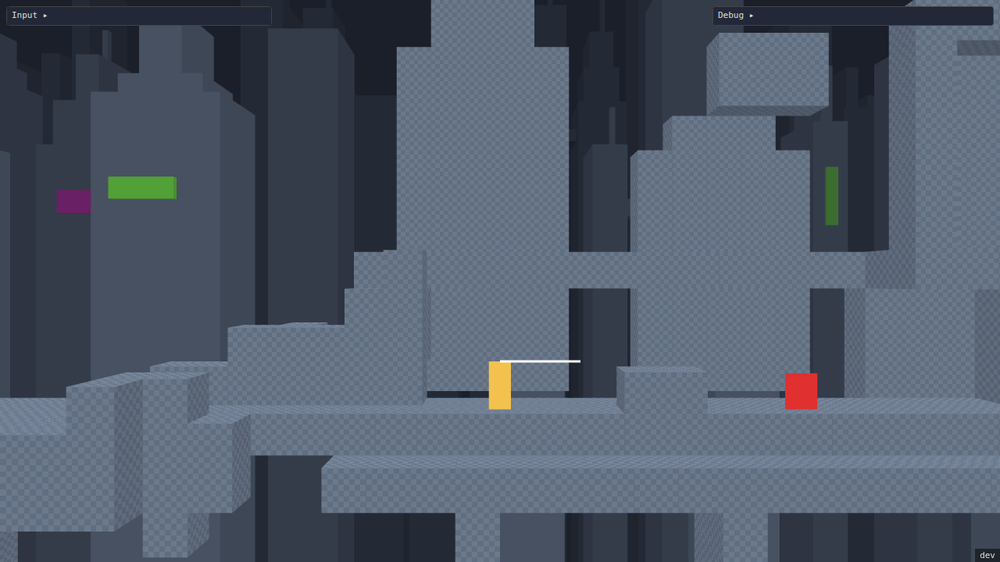
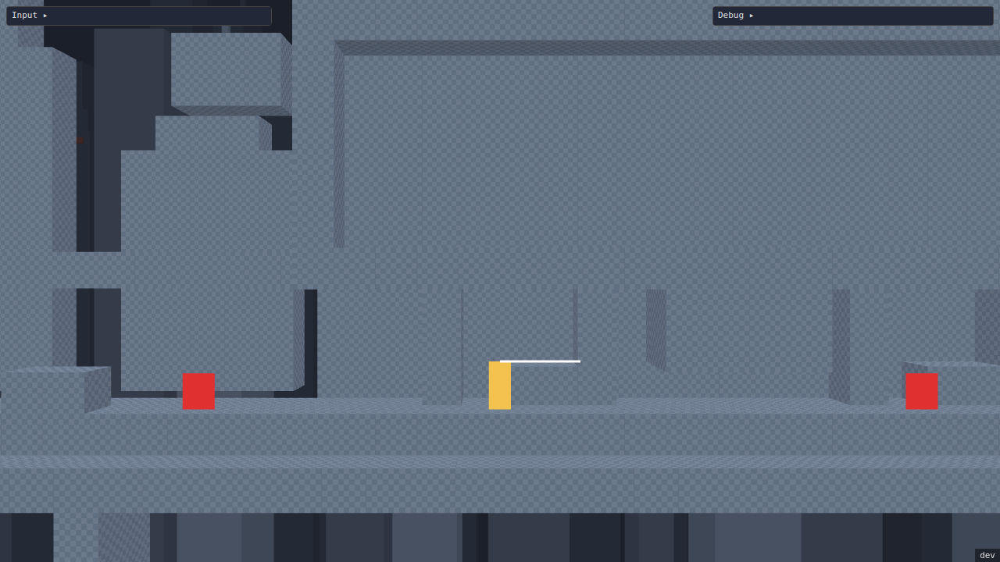
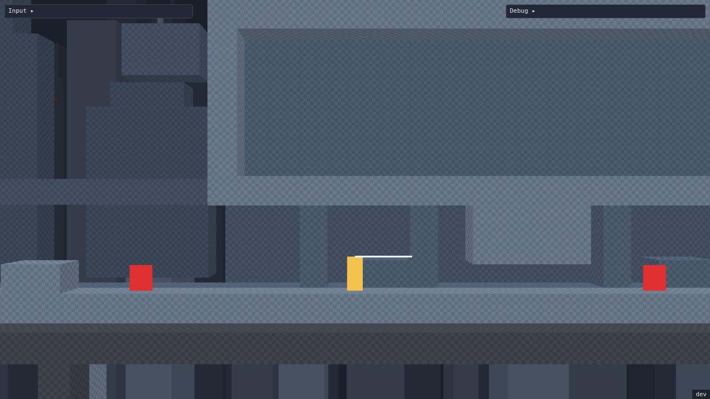
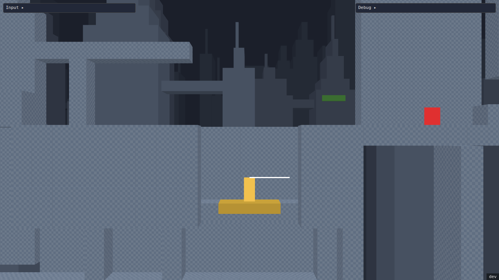
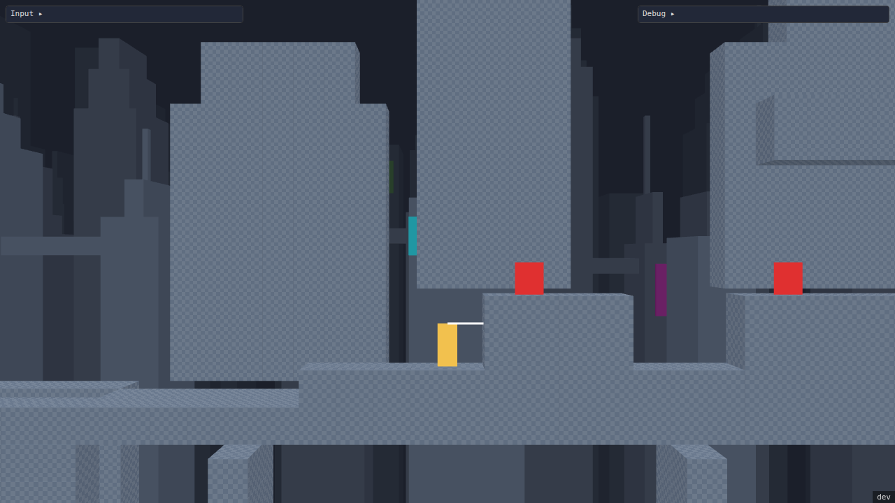
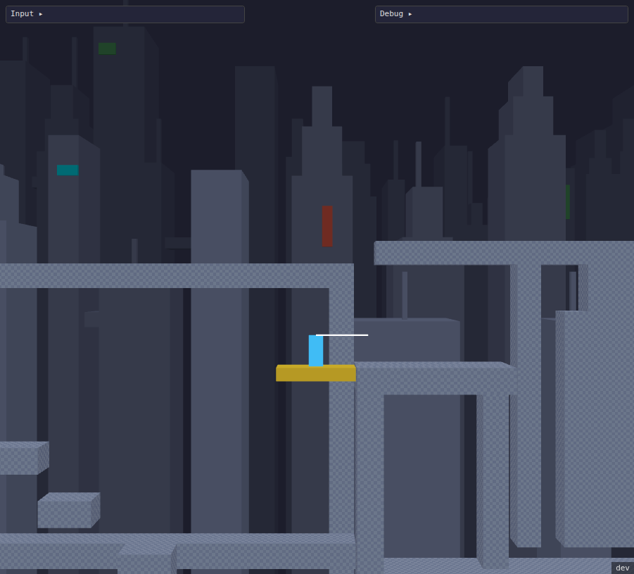
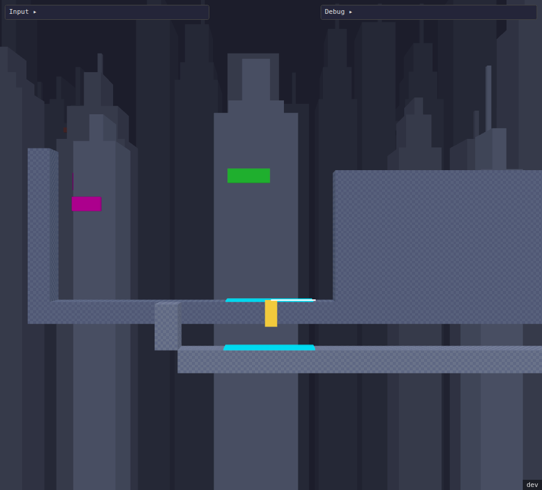
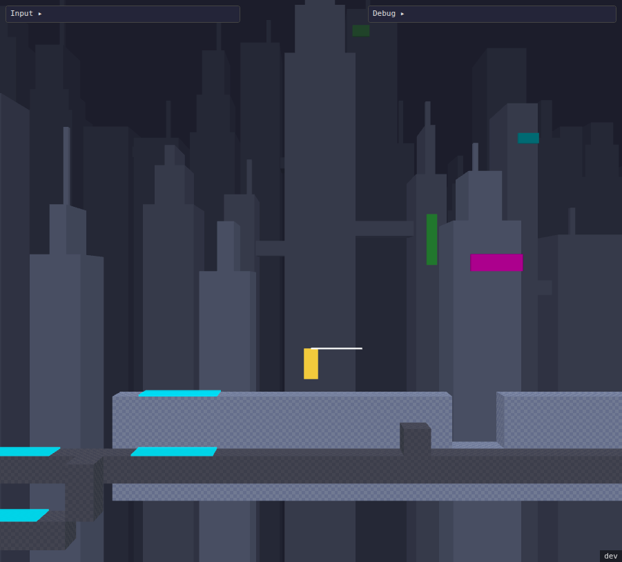
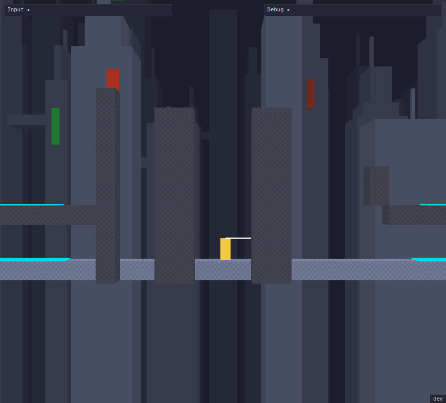
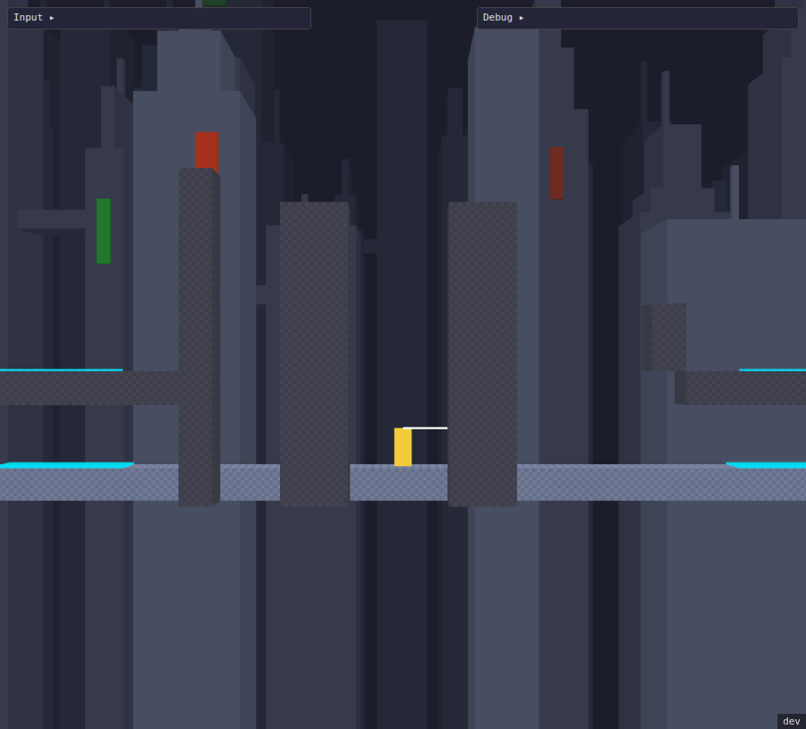

Berserker 7 · Milestone retro 4: test level, enemies and depth rows
Written 20 November 2026. Covers 19 November 23:30 to 20 November 17:16 UTC, from the tracker update (PR #94, the end of retro 3) to the depth rows reach rule and air grab (PR #104). Live build 68876a9. Screenshots come from the lanes' local builds.
In one paragraph: The Sandbox now opens on a real test level: the second cyberpunk blockout extended from 24 to about 160 tiles, with indoor sections, a crawl space, climbs, drops, an underpass and rooftops, in front of a city backdrop with stepped towers, antennas, signs and skyways. The first moving platforms and the first enemies are in. Platforms move on paths computed from the game tick, so the guest works out their positions itself. Enemies stay idle until a player comes within 7 tiles, then chase. The host sends them in every snapshot, each with a fixed id and a type. Blocks are shaded by depth so the walkable row stands out. A measurement in the level work showed that, under added delay, the guest drew the host's player and the enemies in steps 30 times a second. The cause was found in the code and fixed. Last, depth rows: at marked places the player can hop to an adjacent row in front or behind that is higher or lower, with two control schemes, tried on a dedicated test map and checked with two players.
Timeline
| Merged (UTC) | PR | What |
|---|---|---|
| 14:25 | #96 | Test level, moving platforms and enemies (issue #95). The moge3-cyberpunk-blocks map extended to x 150 and made the Sandbox default; varied city backdrop; a moving platform and a lift; 8 enemies; the snapshot gains the host's world tick and the enemy list. After the owner's review in the same PR: enemies get a fixed id and a type, and blocks are shaded by depth. Protocol versions 3 and 4. 13 commits. |
| 14:53 | #99 | Smooth remote movement under delay (issue #97). The guest draws the host's player and enemies 6 ticks behind the newest data that has arrived, not behind an estimate of the host's current tick. |
| 15:03 | #100 | Depth rows (issue #98): transfer zones, a 0.25 s hop between adjacent rows, control schemes A and B, a camera that follows the row's depth, the depth-rows-test map. Protocol version 5. 13 commits. |
| 17:15 | #104 | Depth rows: reach rule, air grab and gravity drop (issue #103). Going up only to a row within reach (top of the box: 1.2 tiles standing, 3.63 at the top of a jump); a crouch in the air inside a zone grabs the higher row; going down moves across in depth over 0.25 s while normal gravity does the height (a 5-tile drop takes about 0.6 s). New test section x 103–146. Protocol version 6. |
Decisions made
| Decision | Detail |
|---|---|
| "If we know better, do better" | The owner's rule for reviewing lane work: whatever a lane builds, if a better approach is known, say so and change it. The owner's questions are for understanding and do not steer a running lane, which may find something better. |
| Enemy ids now, not later | Once enemies are in the network state they are sent properly: a fixed id for each enemy's whole life and a type, the full list in every snapshot, and the guest adds, updates and removes by id. The owner called it foundation work and put it in #96 rather than a later issue. |
| Platforms from the tick (D-129) | A platform's position is a function of the world tick only. Platforms are never sent; the snapshot carries the host's world tick (wt) so the guest computes the same positions, also while predicting its own player. |
| First enemy behaviour | Idle until a player's centre is within 7 tiles, then moves towards the nearest player at 3 tiles/s for good. No damage, health, pushing or attacks. Pre-placed in the map; no spawner yet. |
| How the level is made | The generated blockout is kept byte for byte (tools/moge3-cyberpunk-blocks.base.json); authored sections in tools/levels/moge3-cyberpunk-blocks.sections.mjs are merged by npm run build:level, and a test checks the committed map matches. Edit the sections, never the map. The depth rows map follows the same rule. |
| Depth shading | Blocks on the player's row are unchanged; behind are darker and cooler (0.62, 0.48, 0.38), in front darker and warmer (0.34). Relative to the player's row, easing during a hop. |
| Remote draw time | 6 ticks (100 ms) behind the host tick of the data arriving now, measured from ping replies, which travel the same way as snapshots. Correct at any delay and with different delays each way. |
| Frame blending: low priority | The game draws its 60 ticks a second without blending between them, so on a 144 Hz display positions change 60 times a second. The owner: smooth at 60 fps is enough for now; it is on the to-do list. |
| Depth rows (D-130) | Rows are a cells map's depth slices; the player collides with its own row. The map lists transfer zones; switching works only inside them. A scripted hop of 15 ticks with a 0.5-tile arc. Scheme A: crouch then jump descends, jump then crouch ascends. Scheme B: double crouch, double jump. Presses at most 12 ticks (200 ms) apart. The camera follows the row's depth by default so the player keeps its size. |
The test level
| x (tiles) | Section |
|---|---|
| -11 to 10 | The original blockout, unchanged |
| 11 to 24 | Outdoor walkway with a crate step |
| 25 to 44 | Indoor station, ceiling at 3, a crouch crawl at 34–37 |
| 45 to 62 | Climb to a deck at 6 over a lower walkway |
| 63 to 84 | Gap crossed by the moving platform (x 63 to 76, 3 tiles/s); a pit below with a way back up |
| 80 to 104 | 8-tile drop to a street under a bridge |
| 105 to 121 | Indoor underpass; the lift at 115–118 (y -2 to 6, 2 tiles/s) is the only way up |
| 122 to 150 | Rooftops at 6, 7 and 9, a 3-wide gap, the end wall |
2,219 cells, 2 platforms, 8 enemies at x 22, 40, 60, 95, 100, 110, 135 and 145. Layout rules: step-ups at most 2, same-height gaps at most 3, standing headroom at least 2, a crawl exactly 1.





Networking

?lag=200. Its offset on the platform was exactly 1.5000 tiles on every frame.Stepped movement under delay (#97, PR #99)
Measured on the guest, every frame for 4 s, two visible windows, ?net=local. "Moves" counts the positions per second that change; the step is the median size of a change.
| Lag (host / guest) | Before: player | Before: enemy | After: player | After: enemy |
|---|---|---|---|---|
| 0 / 0 ms | 60/s, 0.133 | 60/s, 0.05 | 60/s, 0.133 | 60/s, 0.05 |
| 100 / 100 ms | 30/s, 0.267 | 30/s, 0.10 | 60/s, 0.133 | 60/s, 0.05 |
| 200 / 200 ms | 30/s, 0.267 | 30/s, 0.10 | 60/s, 0.133 | 60/s, 0.05 |
| 200 / 0 ms | 30/s, 0.267 | 30/s, 0.10 | 60/s, 0.133 | 60/s, 0.05 |
Cause: the guest drew remote bodies at its estimate of the host's current tick minus 6. Snapshots arrive one one-way delay late, so above about 100 ms that point was past the newest snapshot on every frame, and the interpolation held it until the next one arrived. At 200 / 200 ms the draw tick was a median 8.1 ticks past the newest data. A new test fails on the old code and passes on the new.
Snapshot size
| Protocol | Change | 8 enemies, every value at its extreme | Worst case (16 enemies) |
|---|---|---|---|
| 3 | world tick and enemies (x, y, awake) | 570 B | 698 B |
| 4 | enemy id and type | 854 B | 998 B |
| 5 | player row, hop and press ages; scheme in the input | 974 B | 1,118 B |
The limit per message is 2,048 bytes. Each version change also changes the PeerJS id prefix and the local channel name, so an older build finds no room instead of misreading messages.
Depth rows
| x (tiles) | Rows | What it tests |
|---|---|---|
| 0–12 | row 0, floor 0 | start |
| 8–11 | zone 0 → +1 | descend towards the camera |
| 13–26 | wall on row 0 | the front row is the only way past |
| 28–31 | zone +1 → 0 | ascend away from the camera |
| 35–37 | zone 0 → -1 | ascend away, onto the branch |
| 38–56 | rows 0 and -1 side by side | no zone: switching does nothing |
| 57–60 | zone -1 → 0 | descend towards the camera; the branch rejoins |
| 64–67 | zone 0 → -1 | descend away, onto a low back path |
| 70–84 | row -1 behind a row-0 wall and pillars | back row partly hidden |
| 87–90 | zone -1 → 0 | ascend towards the camera |
| 100 | end wall |




Results
- Both schemes walk the whole map, ending on row 0 at x 100; switching does nothing between zones.
- Two windows: each player sees the other's hop; the drawn depth changes at most 0.1 per frame with no lag and with
?lag=200. Before #99 was merged in, the guest saw the host's hop in steps of up to 0.2 about 30 times a second at?lag=200. That matches the #97 cause, but the lane did not trace it.
Process
- Owner tries it first: both feature lanes sent a notice as soon as their work ran in one browser, and the dev server was switched to their worktree before review.
- Changes go into the open PR: the owner's enemy ids and depth shading went back to the #96 lane, with one more r9000 round on the new commits only.
- Merges approved in advance: the owner approved merging #96, #99 and #100 once done, reviewed and green; each was merged when its lane reported it held, then checked live (
version.json, and the map and tracker byte for byte). - Measure, then fix: the #97 lane measured every frame at three delays before changing code, proved the cause, and kept the delay value and the snapshot format as they were.
- Two lanes in parallel on the network code: #97 and #98 were told about each other and kept their changes small; the depth rows lane merged main after #99 and re-ran its checks. No conflicts.
- Review rounds capped at two: leftover findings were listed in the reports, not looped on.
What went wrong or needs watching
| Issue | What happened | Status |
|---|---|---|
| A passed check that was wrong | Networking slice 1 (#81) listed "with ?lag=200 the other player is smooth, just later" as checked. Per-frame numbers in #96 showed it had stepped at 30 a second all along. The #97 and #100 checks measured every frame instead of judging by eye. | fixed PR #99 |
| Enemies first sent without ids | The first #96 version identified enemies by list position. Harmless until an enemy can die; fixed in the same PR on the owner's call. | fixed |
| Headless browsers too slow | Two game tabs headless ran at about 2 fps, too slow to judge movement. Two-player checks now use two visible windows. | known |
| Hidden host tab | Enemies once jumped about once a second on the guest with the host tab hidden at ?lag=200. Not reproduced in #97 (minimised and background tab, 15 s each). | open unproven |
| Frame blending above 60 Hz | About 58% of frames on a 144 Hz display repeat the previous position. | to-do low priority |
| Merged presses lost (#100, round 2) | When the host's queue of guest inputs overflows and merges frames, a scheme A ascend (jump then crouch) or a scheme B double press is lost; the next snapshot corrects the guest. A row beyond ±64 would be clamped on the wire (no map has one). | open documented |
| Depth rows limits | The 2D view shows row 0 only. On row +1 the end walls at x 5 and 33 can be jumped over, and the player falls back to the spawn. Front blocks can hide a player on a back row (no cut-away yet). | open |
| Test level limits | Walking on or off the moving platform has a window of about 0.2 s (jumping is easy). Awake enemies chase through walls and between levels. Five cells of the original blockout sit in front of the play plane above the walkway (x -8, 6, 7). | open |
| One failed grab with two players | In one of three two-window runs in #104 (no lag), the guest's air grab at zone J ended on row 0 instead of the ledge; the guest was already moving before its walk-off. Not repeated; cause not found. | watch |
| Dev server | Every merge removes the worktree the server ran from, and background commands stop after 2 hours; started four times today. | watch |
Next
- Owner play test of depth rows: which control scheme, hop timing, whether the camera should follow the row.
- If depth rows stay: enemies and shots across rows, cutting away blocks in front of a player on a back row.
- Hit decisions under delay (T-112), before enemies deal or take damage.
- Maps set base camera values (T-107); map editor draft (T-108).
- Networking: fewer packets, then integers with fixed point; lobby Ready, Start and drop-in (T-052).
- Low priority: blend drawn positions between ticks above 60 Hz; the menu background 2:1 rule (D-128).
- Tracker and
AGENTS.mdbrought up to date in PR #102 (issue #101): notes on T-109, T-110, T-074, T-034, D-130, T-111 and T-089 (frame blending, low priority); D-129 moved to ongoing.